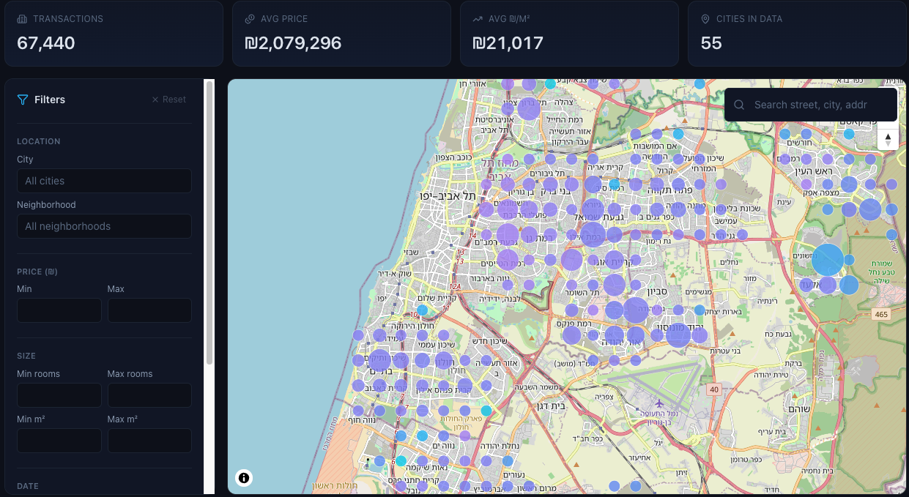

Data Pipeline · MLOps
2025
Israel Housing Dashboard
End-to-end microservices stack for collecting, enriching, and serving Israeli real-estate data — orchestrated with Docker Compose. Five dedicated services, a MongoDB feature store with ~88 enriched features, seven trained ML models behind a multi-model serving API, and an interactive Next.js dashboard with a zoom-aware deck.gl map over 270K+ records.
Data Pipeline · ETL
- Playwright scrapers across 5 sources: Govmap (Rashut), odata.org.il, Tax Authority, Madlan, CBS
- ETL: raw_records → features_enriched (~88 features) with 2dsphere + H3 indices in MongoDB
- OSM spatial feature engineering: distances to schools / parks / water, POI counts at multi-radii, land-use ratios
- Macro-economic enrichment: CPI, prime rate, GDP growth, USD/ILS, real interest rate, housing-CPI gap
ML Serving
- 7 trained models: LightGBM × 4 variants, CatBoost, Stacked × 2 (R² + MAE tracked per model)
- FastAPI + LRU artifact cache · lazy loading · per-model and multi-model comparison endpoints
- Live champion switching via env var — no service rebuild required
- Reproducible runs: model.joblib + metrics.json + run_metadata.json per artifact
Frontend & Map
- Next.js 16 + React 19 · MapLibre GL + deck.gl 9 · TanStack Query · Zustand · Recharts
- Zoom-aware H3 clustering: res 5 (~8.5 km) → 7 → 8 → individual points at high zoom
- Mongo $group aggregation on indexed H3 field — millisecond response over 270K records
- Pages: live map, stats (timeseries / YoY heatmaps / histograms), property detail, AI prediction playground
Infrastructure & Geocoding
- Docker Compose orchestration across 5 services + Makefile shortcuts for ETL / health / champion
- Address-level geocoding via Govmap — idempotent, resumable, ~63K-address cache covering ~295K records (4.6× hit ratio)
- 2dsphere + text + H3 indices · MongoDB Atlas-compatible · async Motor driver throughout
- Multi-environment .env · health checks · streamlit QA tool
Docker Compose
FastAPI
MongoDB
LightGBM
CatBoost
XGBoost
scikit-learn
pandas
geopandas
Playwright
H3
joblib
Next.js
MapLibre
deck.gl
View on GitHub